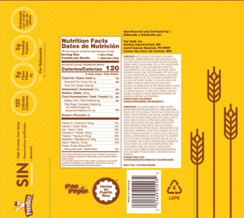

Undeclared sesame. Puerto Rico.
Do this: If you’re allergic to sesame, don’t eat it.
Para Bien Al Grano bread, Pan Pepin Inc.

What’s wrong
- Undeclared sesame.
- The bread contains sesame.
- People allergic to sesame could have a serious or life-threatening reaction.
- Pan Pepin Inc. of Bayamón, Puerto Rico, is recalling certain lots.
- The company says it is strengthening its labeling and allergen checks.
- Illnesses: not stated.
Check your kitchen
- Para Bien Al Grano, 24 oz box, UPC
0 21425 01513 4 - Sell By Oct / 12, lot
3B1 274, exp10‑12‑26 - Sell By Oct / 14, lot
3B1 277, exp10‑14‑26 - Sell By Oct / 15, lot
3B1 278, exp10‑15‑26 - Sell By Oct / 17, lot
3B1 280, exp10‑17‑26 - Sell By Oct / 18, lot
3B1 281, exp10‑18‑26 - Sell By Oct / 19, lot
3B1 282, exp10‑19‑26 - Sell By Oct / 21, lot
3B1 284, exp10‑21‑26
Where it was sold
Stores not named in the notice- Distributed throughout Puerto Rico.
- Stores are not named.
Do this:
- If you’re allergic to sesame, don’t eat it.
- Return it to the place of purchase for a full refund.
- If you can’t return it, throw it away.
- Questions: Pan Pepin Inc, 787‑403‑7363 (Mon to Fri 8 a.m. to 5 p.m.).
Read the official notice: FDA notice · Aviso en español